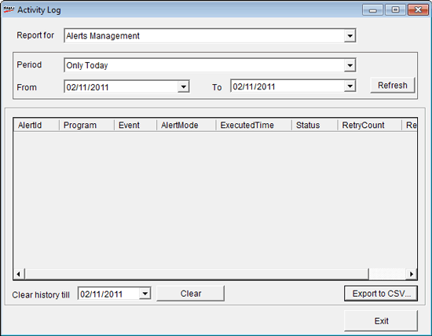
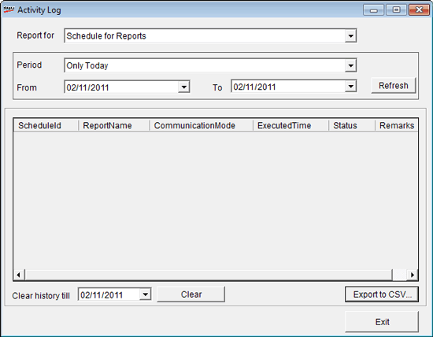

The Activity Log Report helps in viewing all the activities performed in the Alerts Management and Schedule for Reports. The periods which can be selected are last week, last month, last quarter, last financial year and so on.
How to reach: Housekeeping > Activity Log
The Activity Log Report window is displayed

Report for: Reports can be generated either for Alerts Management or Schedule for Reports
Alerts Management: The following are the fields displayed if Alerts Management is selected against Report for
Period: The period for which Reports are to be generated can be selected. The Activity Log Report may be generated for the following periods: Only Today, Current Week, Last Week, Current Month, Last Month, Current Quarter, Last Quarter, Current Financial Year, Last Financial Year, Current Calendar Year, Last Calendar Year and Custom
From: Select the date from which the History Report is to be displayed
To: Select the date to which the History Report is to be displayed
View: Click to display the History Report in a Tally window
AlertId: The Alerts Management ID is displayed here
Application: The Application configured is displayed here
Event: The Event configured is displayed here
AlertMode: The AlertMode configure—whether SMS, Direct Copy or Email— is displayed here
Executed Time: The time at which the Report has been executed is shown here
Status: The status of the report is shown here
Retry Count: The Retry count is shown here
Remarks: The remarks are shown here
Clear history till: If any historical data is to be cleared, the date till which it is to be cleared may be set here
Clear: Click to clear the data
Export to CSV... Click to export the History Report to a Comma Separated Value (CSV) File
Exit: Click to exit the Activity Log Report
Schedule for Reports: If Schedule for Reports is selected against Report for, the following window is displayed

ScheduleId: The Schedule ID is displayed
ReportName: The Report Name specified is displayed
Communication Mode: The specified communication mode is displayed
Executed Time: The time at which the report has been scheduled and executed is displayed
Status: The status of the report—Success or Failure—is displayed
Remarks: Remarks entered, if any, are displayed